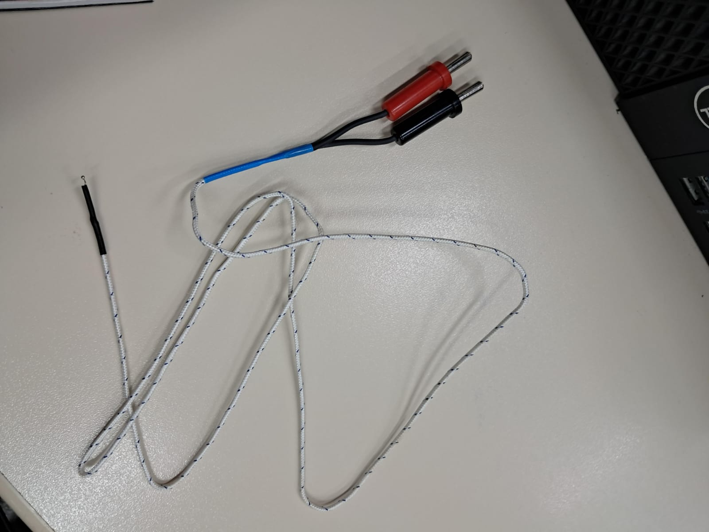
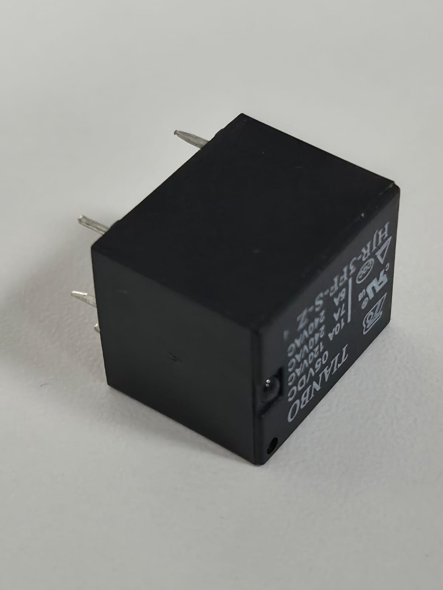
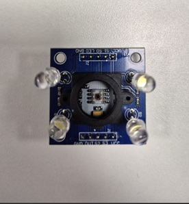
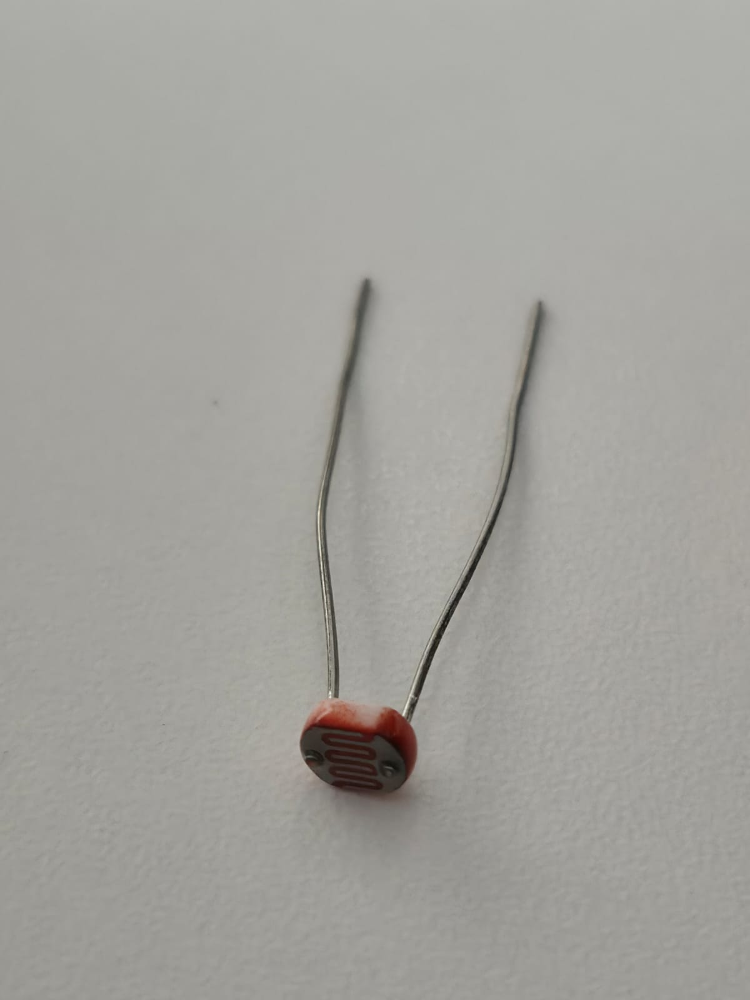
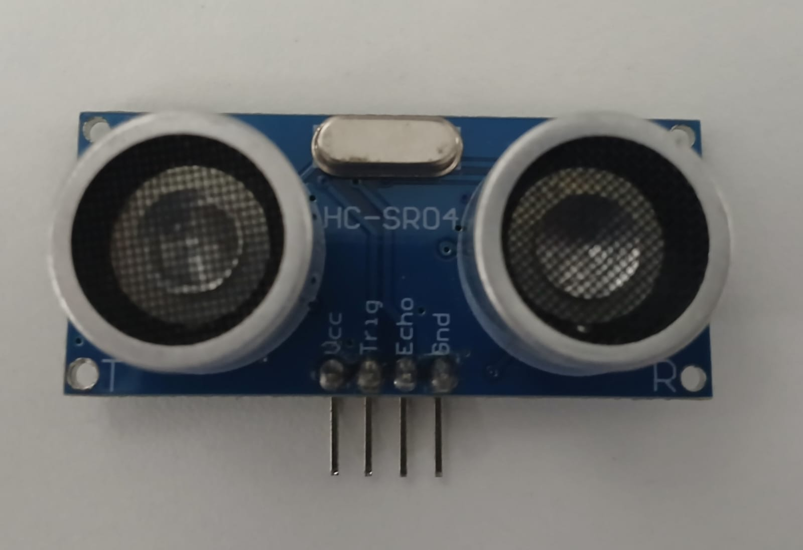
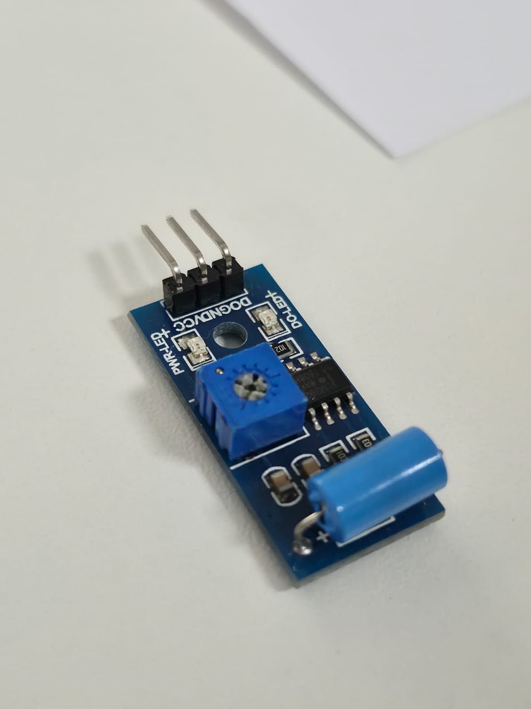
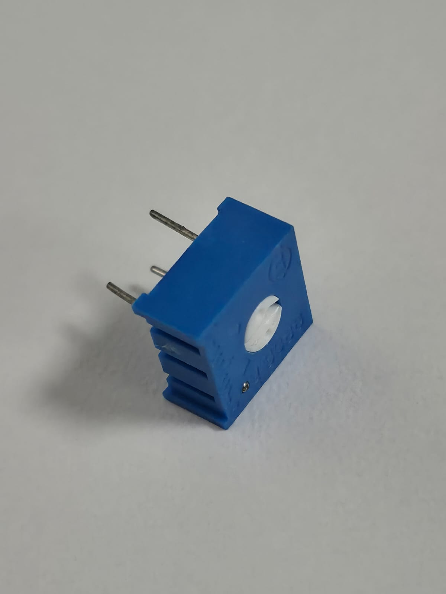

Sensores e Componentes Eletrônicos
Sensores e atuadores são a base de qualquer sistema de medição, responsáveis por transformar grandezas físicas em sinais elétricos e vice-versa.
Sensores de Temperatura
Termopar
Dispositivo que gera uma tensão elétrica proporcional à diferença de temperatura entre suas extremidades. É robusto e amplamente utilizado em processos industriais de alta temperatura.

NTC (Negative Temperature Coefficient)
Um termistor cuja resistência diminui conforme a temperatura aumenta. É ideal para medições de temperatura ambiente e circuitos de proteção térmica.
Exemplo de aplicação: Termômetros digitais e monitoramento de temperatura de CPUs.
Componentes e Sensores de Campo
Relé (Atuador)
Dispositivo eletromecânico que funciona como um interruptor controlado eletricamente. Permite que um circuito de baixa potência (como Arduino) controle cargas de alta potência, como lâmpadas ou motores, garantindo isolamento elétrico.

Sensor de Cor
Identifica cores através da captação de luz refletida. Utiliza filtros RGB para converter a luz em sinais elétricos, permitindo ao sistema distinguir diferentes tonalidades.

LDR (Resistor Dependente de Luz)
Componente cuja resistência varia conforme a intensidade da luz: quanto mais luz incide, menor é a resistência.
Exemplo de aplicação: Sistemas de iluminação pública (postes que acendem automaticamente à noite).

Sensor Ultrassônico (HC-SR04)
Mede a distância até um objeto utilizando o tempo de retorno de ondas sonoras (eco).
Exemplo de aplicação: Sensores de estacionamento automotivos e robótica para evitar obstáculos.

Sensor de Vibração
Detecta movimentos ou impactos através de um contato mecânico interno. Muito comum em sistemas de alarme e segurança.

Trimpot (Potenciômetro de Ajuste)
Componente ajustável utilizado para calibração. Diferente de um potenciômetro comum, o trimpot costuma ser ajustado uma única vez com uma chave de fenda para definir limites de sensibilidade ou níveis de disparo de outros sensores.
